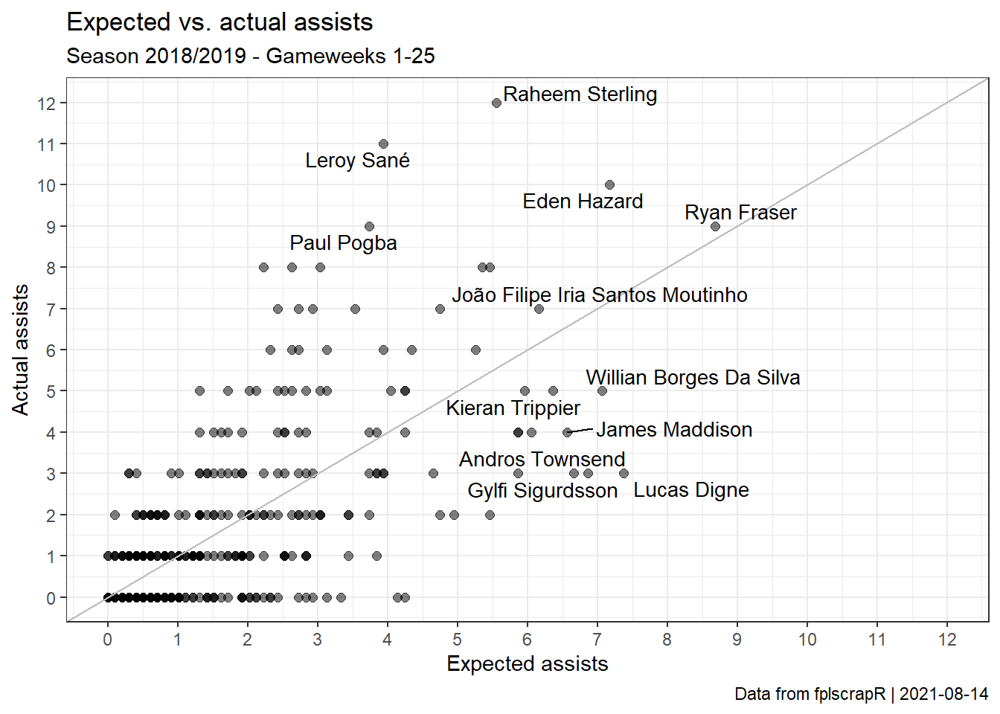

vignettes/simplexamodel.Rmd
simplexamodel.RmdSuppose we are interested in trying to build an ‘expected assists’ (xA) model from the FPL data? Again, we take the first 25 gameweeks of the 18/19 season as an example.
First we fetch the gameweek-by-gameweek details of ALL players using get_player_details, then create our model dataset by selected information that could predict assist performance, such as Key Passes and Open Play Crosses:
library(fplscrapR) library(dplyr) df <- get_player_details(season=18) # this may take a while to load as it fetches ALL player details dfmodel <- df %>% filter(round %in% 1:25) %>% # filtering out the rounds we are interested in mutate(potentialassists = key_passes+open_play_crosses) %>% # creating a new variable that give us a potential indicator for expected assists, namely the number of key passes and open play crosses for each player select(playername,assists,potentialassists) %>% # selecting the variables we need for our analysis group_by(playername) %>% # transformation to group and summarize all our variables (i.e. the actual and potential assists) at the 'playername' variable level summarize_all(sum) %>% mutate(xA=potentialassists*(sum(assists)/sum(potentialassists))) # creating a new variable called 'xA' that attempts to predict the actual number of assists based on the relationship (from our data) between the number of assists and key passes+open play cross a player has produced
Next we use dplyr and ggplot2 to transform and plot the data, comparing the actual FPL assists with our ‘xA’ model predictions. We also use the ‘ggrepel’ package to avoid cluttering of our plot:
dfmodel %>% ggplot(aes(x=xA,y=assists)) + geom_point(alpha=0.5,size=2) + theme_bw() + labs(x="Expected assists",y="Actual assists",title="Expected vs. actual assists",subtitle="Season 2018/2019 - Gameweeks 1-25", caption=paste("Data from fplscrapR | ",Sys.Date(),sep="")) + geom_abline(intercept=0,slope=1,colour="grey",size=0.5) + geom_text_repel(size=3.75,aes( label=ifelse(xA>quantile(xA,prob=1-1.5/100),as.character(playername),ifelse(assists>quantile(assists,prob=1-1.5/100),as.character(playername),"")))) + # scale_x_continuous(limits=c(0,12),breaks=0:12) + scale_y_continuous(limits=c(0,12),breaks=0:12)

Here we can see that there is a significant variation around our expected assists. Ryan Fraser’s ouput is, for instance, well predicted. Raheem Sterling and Leroy Sanés are not - the model firmly under-estimates their assists. Meanwhile, the assists of players like Lucas Digne and Andros Townsend are far over-estimated.
Finally, we test our xA model to see how it fares in explaining the variation of actual assists, using the summary function from R base:
##
## Call:
## lm(formula = xA ~ assists, data = dfmodel)
##
## Residuals:
## Min 1Q Median 3Q Max
## -2.8933 -0.4290 -0.3280 0.2436 5.1990
##
## Coefficients:
## Estimate Std. Error t value Pr(>|t|)
## (Intercept) 0.42900 0.04669 9.189 <2e-16 ***
## assists 0.58220 0.02219 26.237 <2e-16 ***
## ---
## Signif. codes: 0 '***' 0.001 '**' 0.01 '*' 0.05 '.' 0.1 ' ' 1
##
## Residual standard error: 0.9957 on 595 degrees of freedom
## Multiple R-squared: 0.5364, Adjusted R-squared: 0.5356
## F-statistic: 688.4 on 1 and 595 DF, p-value: < 2.2e-16